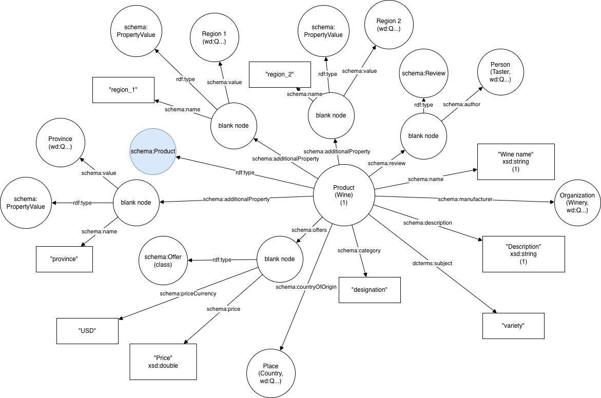

Projects (Click to View)
Designed and structured a logical metadata schema mapping complex academic citation formats into an accessible digital product layer. Handled the frontend design logic to ensure high accuracy and visual simplicity.

Engineered a secure algorithmic cleanup workflow to reconcile mismatched records, schemas, and duplicate records across conflicting enterprise datasets. Established a clean, singular source of truth database framework using OpenRefine, Schema.org mappings, and Wikidata serialization.

Designed dynamic interactive library training modules optimized for user cognitive load. Translated heavy academic backend systems documentation into interactive branching scenarios, hotspots, and guided media tours.

Professional Timeline
- Delivered research catalog navigation systems training to a campus ecosystem of 1,000+ patrons.
- Oversaw 15+ documentation upgrades and increased platform interaction parameters by 17%.
- Facilitated over 350 specialized technical consultations and 55 direct info navigation instruction sessions.
- Managed database records validation protocols and automated structural metadata preservation workflows.
- Supervised 12 technical assistants each year for two years while managing daily workflows across OCLC and WorldCat platforms.
- Troubleshot user access, system navigation, and resource requests to improve resource discoverability.
- Performed quality control checks on processed materials and catalog entries while coordinating global resource lending workflows.
- Served as a key resource for daily operational support, staff inquiry resolution, and information catalog maintenance.
Professional Endorsements
"Ellie consistently translated dense technical systems criteria into incredibly smooth workflows. Her metadata governance restructuring elevated our data capture workflows significantly."
"Ellie Cronk is an incredibly hard worker and is a great collaborator. She is very dedicated in pursuing her goals and being the best version of herself that she can be. I am confident she would succeed in any role she would pursue."
"I am confident that Ellie would be a wonderful addition to your team. She has the education,experience, and interpersonal qualities that make her well-suited for the Technical Information Science. I recommend her without reservation."
Professional References
Full formal letters of recommendation and contact details are available immediately upon request.
Let's Connect
I am currently open to information science and research librarian opportunities.